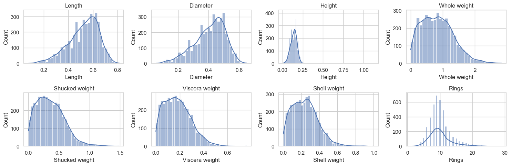
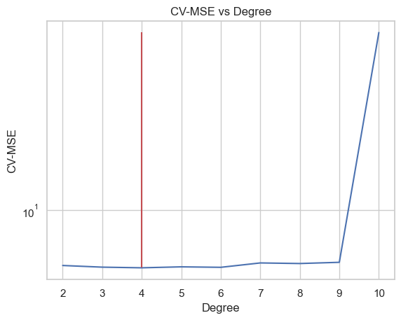
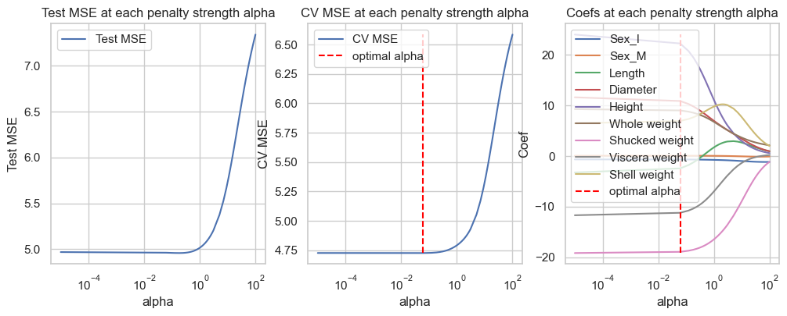

Course: EDA & Unsupervised Learning M1-DAS Lecturer: HAS Sothea, PhD
Objective: In this TP, you will learn how to implement SLR, MLR and enhance your practical skills in pushing the performance of your models on new unseen data using techniques introduced in the course.
print(f'Number of qualitative columns: {len(data.select_dtypes(exclude="number").columns)}')print(f'Number of quantitative columns: {len(data.select_dtypes(include="number").columns)}')
Number of qualitative columns: 1
Number of quantitative columns: 8
B. Perform univariate analysis (compute statistical values and plot the distribution) on each variables of your dataset. The goal is to understand your data (the scale and how each column is distributed), detect missing values and outliers, etc.
Sex
M 36.581278
I 32.128322
F 31.290400
Name: proportion, dtype: float64
import seaborn as sns # For plottingimport matplotlib.pyplot as plt # control panel for graphicsns.set(style="whitegrid")_, ax = plt.subplots(1,1, figsize=(5,3))sns.countplot(data, x="Sex", ax = ax)ax.bar_label(ax.containers[0])ax.set_title("Variable Sex")plt.show()
fig, axs = plt.subplots(2, 4, figsize=(15,5))for i, va inenumerate(data.select_dtypes(include="number").columns): sns.histplot(data, x=va, ax=axs[i//4, i%4], kde=True) axs[i//4, i%4].set_title(va)plt.tight_layout()plt.show()

Note: Most abalones are around 0.001 to 0.25 in height except for a few abalones that are much taller in height than others. THose can be considered outliers.
2. Correlation matrix, SLR and MLR
A. Compute the correlation matrix of this data using pd.corr() function. Describe what you observed from this correlation matrix.
Here, I split the data into two parts. You are allowed to use only the training part for building models. The testing part will be used to evaluate the models’ performance.
3. Polynomial Regression and Regularized Linear Models
A. Build polynomial regression with different degree \(n\in\{2,3,...,10\}\) of the best correlated input to predict Rings. Compute Test MSE for each case.
Perform \(10\)-fold Cross-validation to select the best degree \(n\). Hint: see slide 47.
from sklearn.model_selection import cross_val_score# List to store all lossesloss = [] for deg in degrees: pf = PolynomialFeatures(degree=deg) X_poly = pf.fit_transform(X_train[['Shell weight']]) model = LR() score =-cross_val_score(model, X_poly, y_train, cv=10, scoring='neg_mean_squared_error').mean() loss.append(score)df_loss_cv = pd.DataFrame( {'CV-MSE': loss,'Degree': degrees }, index=['Poly'+str(i) for i in degrees])best_deg = degrees[np.argmin(loss)]ax = sns.lineplot(df_loss_cv, x="Degree", y="CV-MSE", markers=True)ax.vlines(x=[best_deg], ymin=np.min(loss), ymax=np.max(loss), color='r')ax.set_yscale("log")ax.set_title("CV-MSE vs Degree")plt.show()

B. Perform \(10\)-fold Cross-validation to tune the best penalization strength \(\alpha\) of Ridge regression model for predicting Rings. Hint: see slide 51.
Compute Test MSE and compare it to the previous models.
from sklearn.linear_model import Ridge# List of all degrees to search overalphas =list(np.linspace(0.00001, 3, 50)) +list(np.linspace(3.1, 100, 50))# List to store all lossesloss = []test_mse = []test_r2 = []test_r2_squared = []coefficients = {f'alpha={alpha}': [] for alpha in alphas}for alp in alphas: model = Ridge(alpha=alp) mse =-cross_val_score(model, X_train, y_train, cv=10, scoring='neg_mean_squared_error').mean() loss.append(mse)# Fit model.fit(X_train, y_train) coefficients[f'alpha={alp}'] = model.coef_ y_hat_ridge = model.predict(X_test) test_mse.append(mean_squared_error(y_test, y_hat_ridge)) test_r2.append(r2_score(y_test, y_hat_ridge)) test_r2_squared.append(adjusted_r2(y_test, y_hat_ridge, X_train.shape[1]))
fig, axes = plt.subplots(1, 3, figsize=(12,4))pd_coef = pd.DataFrame(coefficients, index=X_train.columns)# Test erroraxes[0].plot(alphas, test_mse, label="Test MSE")axes[0].set_title("Test MSE at each penalty strength alpha")axes[0].legend()axes[0].set_xlabel("alpha")axes[0].set_xscale('log')axes[0].set_ylabel("Test MSE")id_min = np.argmin(loss)print(f'Optimal regularization strength alpha for Ridge regression: {alphas[id_min]}')axes[1].plot(alphas, loss, label="CV MSE")axes[1].vlines(x=alphas[id_min], ymin=np.min(loss), ymax=np.max(loss), label="optimal alpha", color="red", linestyle="--")axes[1].set_title("CV MSE at each penalty strength alpha")axes[1].legend()axes[1].set_xscale('log')axes[1].set_xlabel("alpha")axes[1].set_ylabel("CV MSE")axes[2].plot(alphas, pd_coef.transpose(), label=pd_coef.index)axes[2].vlines(x=alphas[id_min], ymin=np.min(pd_coef), ymax=np.max(pd_coef), label="optimal alpha", color="red", linestyle="--")axes[2].set_title("Coefs at each penalty strength alpha")axes[2].legend()axes[2].set_xscale('log')axes[2].set_xlabel("alpha")axes[2].set_ylabel("Coef")plt.show()
Optimal regularization strength alpha for Ridge regression: 0.06123428571428571

The first graph is the performance of Ridge regression at each value of on the testing data. On the other hand, the second graph illustrates the performance of Ridge regression on cross-validation subsets. The last graph shows the values of the coefficients of the model at each value of penalty parameter \(\alpha\).
We can see that optimal strength \(\alpha\approx 0.0612\) by cross-validation method. The average CV MSE at this level of penalty strength is given below.
C. Perform \(10\)-fold Cross-validation to tune the best penalization strength \(\alpha\) of Lasso regression model for predicting Rings. Hint: see slide 51.
Compute Test MSE and compare it to the previous models.
How many inputs are retained by Lasso?
from sklearn.linear_model import Lasso# List of all degrees to search overalphas =list(np.linspace(0.001, 3, 100))# List to store all lossesloss = []test_mse = []test_r2 = []test_r2_squared = []coefficients = {f'alpha={alpha}': [] for alpha in alphas}for alp in alphas: model = Lasso(alpha=alp) mse =-cross_val_score(model, X_train, y_train, cv=10, scoring='neg_mean_squared_error').mean() loss.append(mse)# Fit model.fit(X_train, y_train) coefficients[f'alpha={alp}'] = model.coef_ y_hat_lasso = model.predict(X_test) test_mse.append(mean_squared_error(y_test, y_hat_lasso)) test_r2.append(r2_score(y_test, y_hat_lasso)) test_r2_squared.append(adjusted_r2(y_test, y_hat_lasso, X_train.shape[1]))
fig, axes = plt.subplots(1, 3, figsize=(12,4))pd_coef = pd.DataFrame(coefficients, index=X_train.columns)# Test erroraxes[0].plot(alphas, test_mse, label="Test MSE")axes[0].set_title("Test MSE at each penalty strength alpha")axes[0].legend()axes[0].set_xlabel("alpha")axes[0].set_xscale('log')axes[0].set_ylabel("Test MSE")id_min = np.argmin(loss)print(f'Optimal regularization strength alpha for LASSO regression: {alphas[id_min]}')axes[1].plot(alphas, loss, label="CV MSE")axes[1].vlines(x=alphas[id_min], ymin=np.min(loss), ymax=np.max(loss), label="optimal alpha", color="red", linestyle="--")axes[1].set_title("CV MSE at each penalty strength alpha")axes[1].legend()axes[1].set_xscale('log')axes[1].set_xlabel("alpha")axes[1].set_ylabel("CV MSE")axes[2].plot(alphas, pd_coef.transpose(), label=pd_coef.index)axes[2].vlines(x=alphas[id_min], ymin=np.min(pd_coef), ymax=np.max(pd_coef), label="optimal alpha", color="red", linestyle="--")axes[2].set_title("Coefs at each penalty strength alpha")axes[2].legend(loc='upper right')axes[2].set_xscale('log')axes[2].set_xlabel("alpha")axes[2].set_ylabel("Coef")plt.show()
Optimal regularization strength alpha for LASSO regression: 0.001